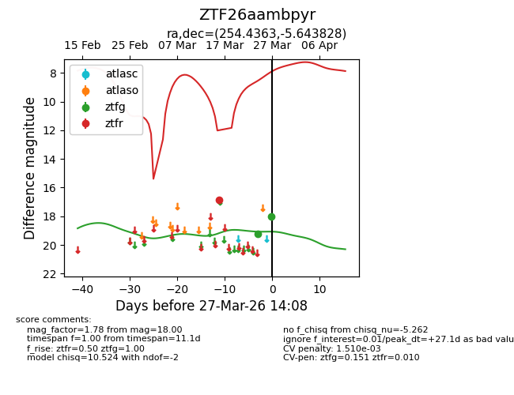
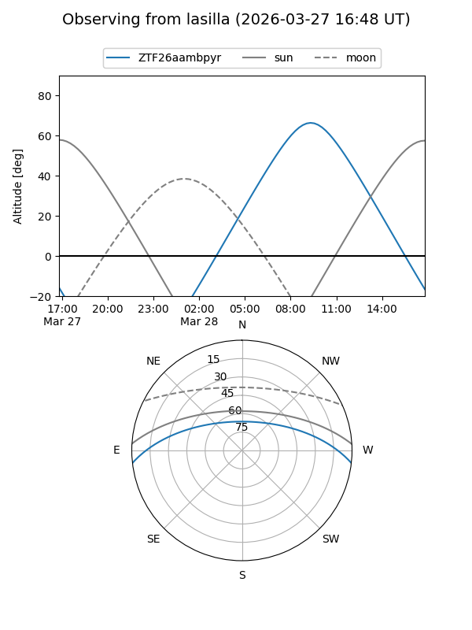
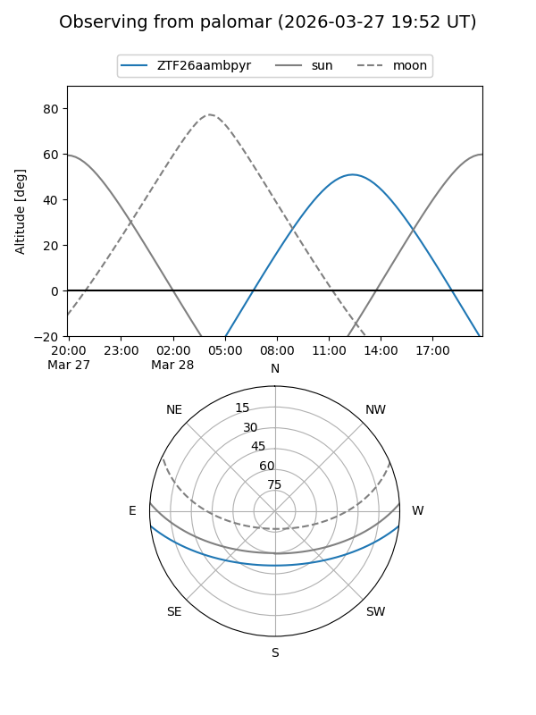
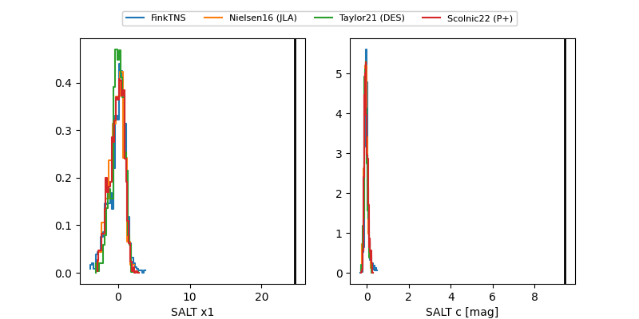

ZTF26aambpyr
Target ZTF26aambpyr at 2026-03-27 14:11
Aliases and brokers:
FINK: link
Lasair: link
ALeRCE: link
alt names
ZTF26aambpyr (ztf,fink_ztf)
Coordinates:
equatorial (ra, dec) = 254.4363,-5.64383
equatorial (HMS+DMS) = 16:57:44.71,-05:38:37.78
galactic (l, b) = (13.8057,+22.13064)
Flags:
likely cv
Photometry:
last ztfg=18.00, ztfr=16.87
2 ztfg, 1 ztfr detections
Lightcurve

Visibility


Additional plots
